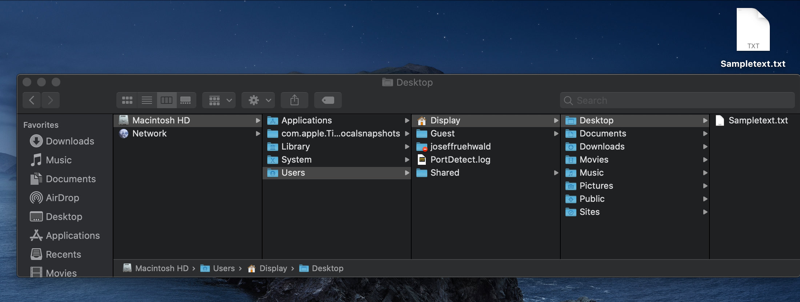
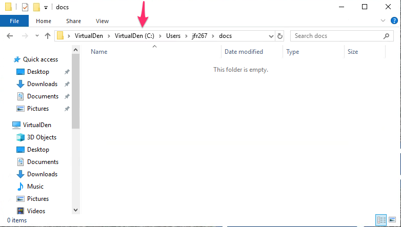
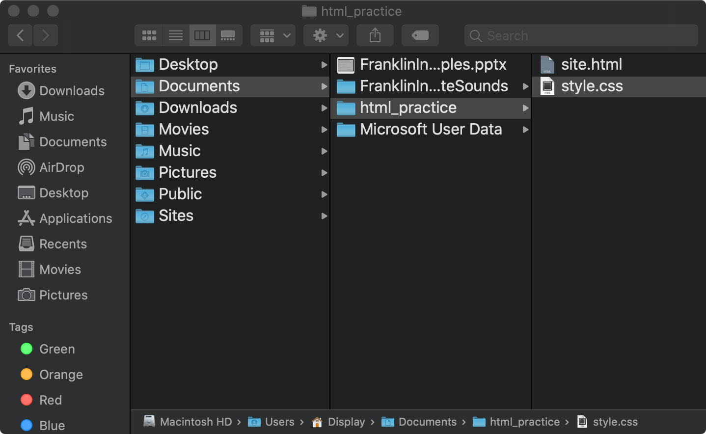
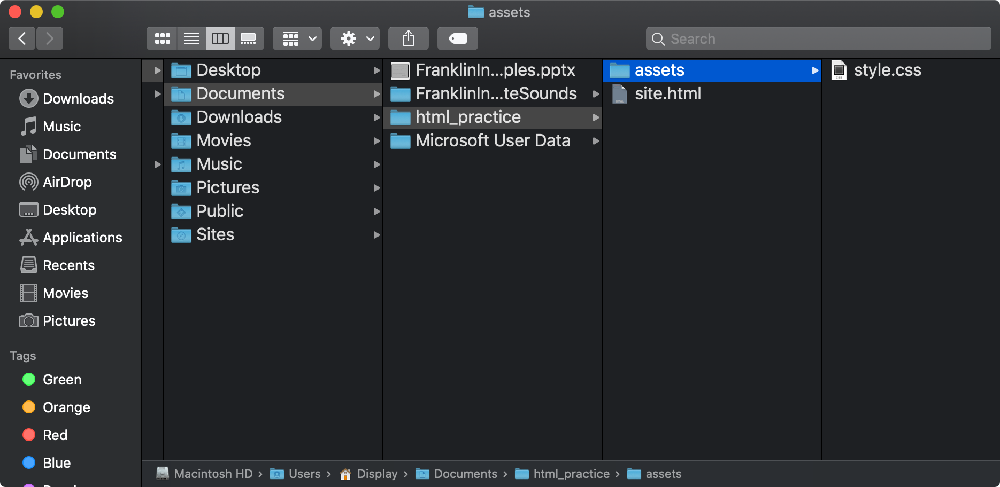
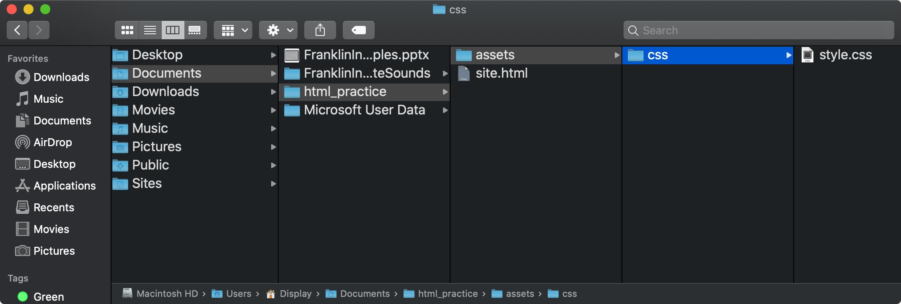

Understanding Directories
Directory Structure
There has recently been an uptick in discussion among college professors that students are less familiar with the notions of files, folders, directories, and paths than they used to be in the past. This is in part a natural consequence of shifting paradigms in computer use. Many people are exclusively using online services like Google Docs, and don’t save files to their computers ever. And even when we do save files on out computer, many operating systems have search based approaches to finding files.
The problem for scientific computing purposes, or even just making some simple HTML pages on your local computer, is that you need to be able to navigate the hierarchical file system of your computer, in order to tell your programs how to navigate it.
Files in Folders
The first thing to be clear about is that all files you’ve saved on your computer are in a folder (a.k.a. a directory). “Documents” or “My Documents” is a folder. Even your Desktop is a folder. This is true for both macOS and Windows. For example, I have an account on my laptop called “Display” for when I want to show how my computer works without showing everyone all of my personal files. In the Display account, I saved a little text file called Sampletext.txt to the desktop. In this screenshot, you can see Sampletext.txt shown both on my desktop, and as a file in a folder.

What’s nice about this image is that you can see where Sampletext.txt exists in the context of my whole hard drive. My “Desktop” is just a folder that my computer shows the content of on my main screen. The Desktop folder is inside of a folder called “Display”. There are other folders in there, including my main user account, joseffruehwald. All of these folders are grouped together in the “Users” folder, and the “Users” folder is one of the first folders immediately underneath my hard drive.
The important thing to keep in mind here is that all files, programs, photos, etc are stored somewhere in a folder, inside of another folder, probably inside of another folder. You might not always interact with the files this way, and they might not always look like they’re in a folder, but they are.
Viewing the folder hierarchy on a Mac
To be able to better view the full hierarchy of folders on a Mac, I would recommend the following:
- Open Finder, and in the View menu, select “as Columns”
- Under the View menu again, select “Show Path Bar”
Viewing the folder hierarchy in Windows
At the top of the file browser on Windows, you’ll see the sequence of files in which the current folder is embedded.

Giving Directions to Programs
Programs are going to need directions for where to find things, and we can do this with “paths”. The concept of a path is so important, I’m going to really emphasize it
“paths”
The “path” to a file is a written instruction for where to find a file on your specific computer.
Relative Paths
Sometimes, we only need to tell a file where another file is relative to itself. For example, here is an HTML document and a CSS stylesheet for that document.

From site.html to style.css: style.css
Because style.css is in the same folder as site.html, we only need to tell site.html to look for style.css, like so
html
<link
rel="stylesheet"
type="text/css"
href="style.css">Just telling the html file to look for style.css, it’s going to look inside of, and only inside of the same folder as itself.
However, sometimes people like to put all of the stylesheets and images for a website inside of a folder called “assets,” like so:

From site.html to style.css: assets/style.css
Now, if we tell site.html just to look for style.css, it’s not going to find it anymore! That’s because style.css is no longer in the same folder as site.html. We’ll need to update the link to the stylesheet to reflect the fact that it’s now in a different folder, like so:
html
<link
rel="stylesheet"
type="text/css"
href="assets/style.css">Here’s how site.html interprets the string assets/style.css:
- Look inside the folder you’re currently in for a folder called
assets - Then, look inside of that folder for a file called
style.css
We could take it a step further, and create a new folder called “css” inside of “assets”, and put our stylesheet there instead.

From site.html to style.css: assets/css/style.css
Now, we’d need to update the link to the stylesheet to look like this
html
<link
rel="stylesheet"
type="text/css"
href="assets/css/style.css">Again, breaking this down into how site.html interprets the string assets/css/style.css goes like this:
- Look inside of the same folder as yourself for a folder called
assets - Look inside of that folder for a folder called
css - Look inside of that folder for a file called
style.css
Absolute Paths
Relative paths define the location of a file relative to another file, usually the one you’re writing. However, we can also define the location of a file on our computer that will work no matter where we’re looking from. These are called “absolute paths.” Put simply, absolute paths just list all of the nested folders a file is in, all the way up to the hard drive. You can see the absolute path for style.css at the bottom of the very last screen shot.
Different operating systems have different short hands for describing the top level, or hard drive level, of the path. On macOS, it’s simply a / at the beginning of the path. On Windows, it usually begins with C:\. For the final location of style.css in the screenshot above, the absolute path would be.
/Users/Display/Documents/html_practice/assets/css/style.cssIf for some reason I didn’t want to move or copy this stylesheet from this location, and I wanted to link to it from an HTML file saved in some completely different location on my laptop, I could give it this absolute path, and it would find it.
Important Note on Naming
From here on out in the course, you should avoid using spaces in any of the files or folders you name. While you can take spaces into account when giving a path, it’s annoying. Instead, I’d recommend using an underscore _, a dash -, or naming files with “camel case”.
my_file.txtmy-file.txtmyFile.txt
Important Note on Using Paths
There are two crucial things to remember about using paths that can be conceptually difficult when first getting started.
- Relative paths always depend on where you’re coming from and where you’re going to. If either my HTML file was in a location I was confused about, or my CSS file was in a location I was confused about, my relative path might not work.
- Both relative paths and absolute paths depend on how files are organized inside of your own computer. A path copied from an example online, or a professor’s template might not work if your file structure is different.
Reuse
Citation
@online{fruehwald,
author = {Fruehwald, Josef},
title = {Understanding {Directories}},
url = {https://lin511-2024.github.io/notes/concepts/02_undersdanding-paths.html},
langid = {en}
}